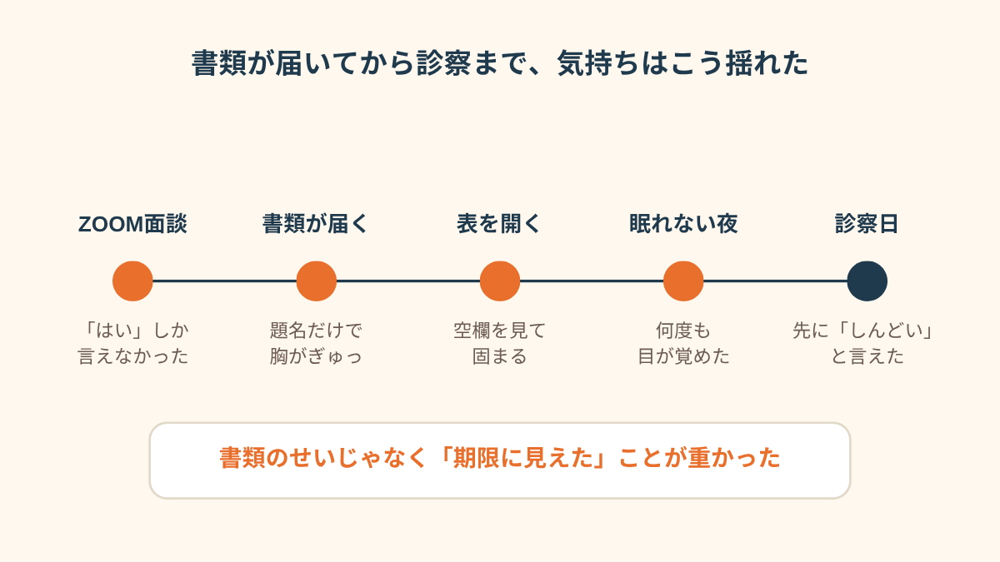
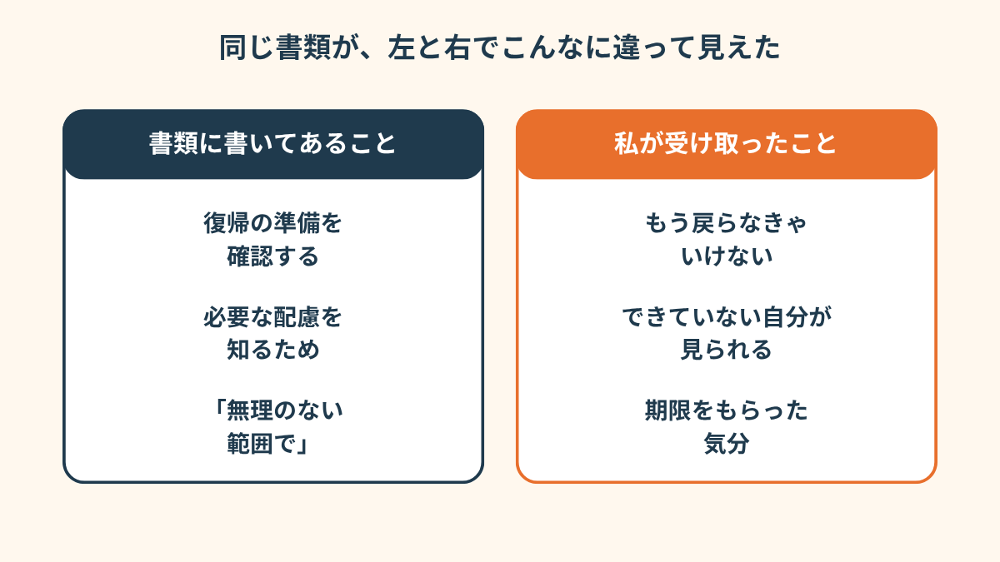
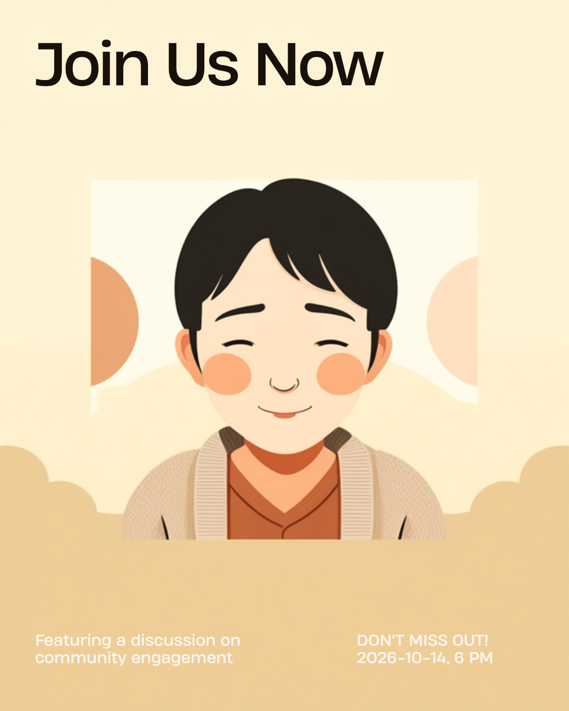
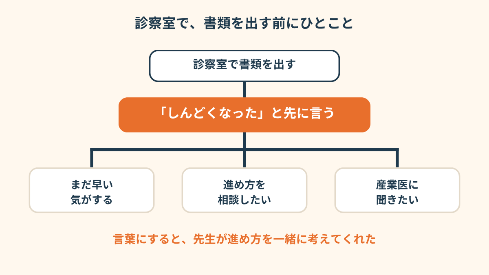
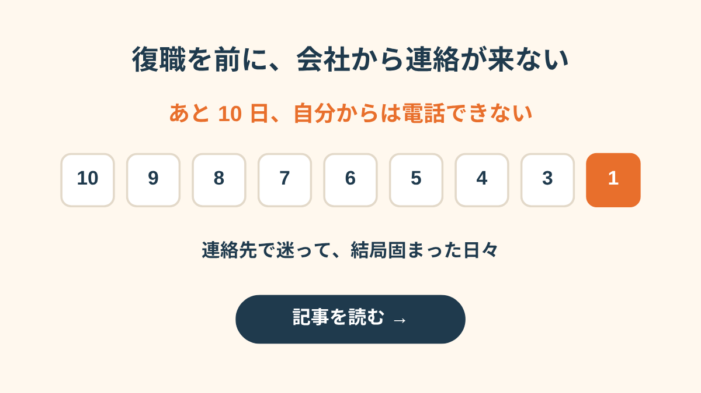
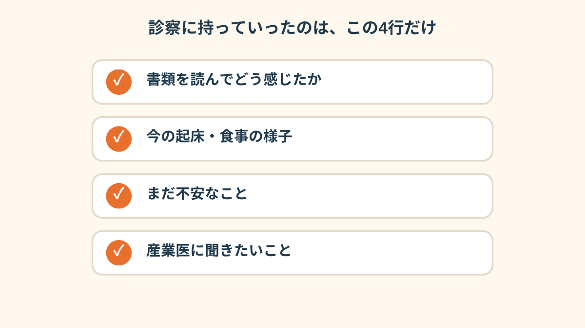
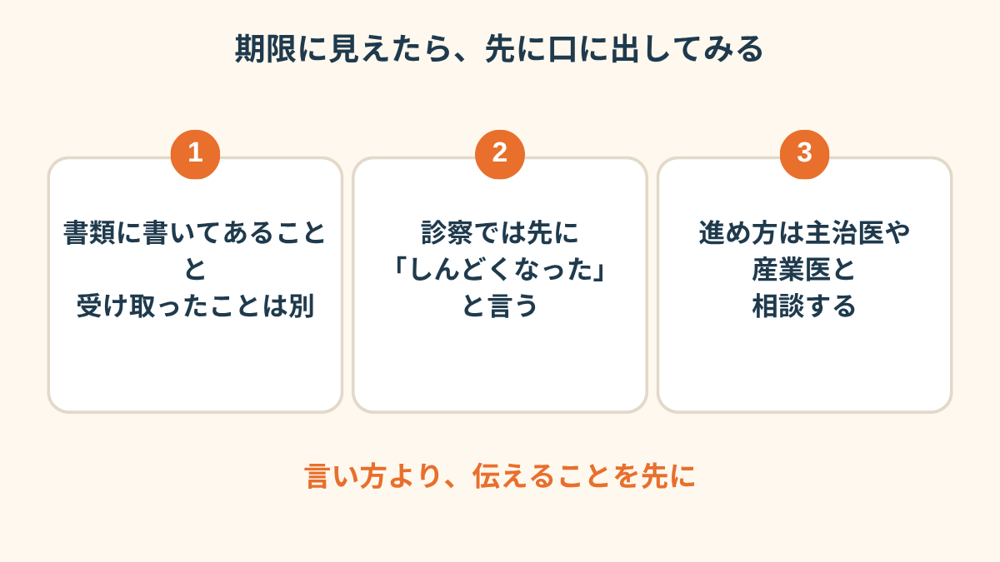

ZOOMの画面の向こうで、人事の人はふつうの声でそう言いました。
私はふつうに「はい」と答えて、通話を切って、そのあと30分くらい、天井を見ていました。
ZOOM面談のあと、書類が届いた
休職して、もうすぐ2ヶ月。
会社から「一度、状況を聞かせてください」と言われて、ZOOMで30分だけ話しました。
話した内容は、実はあまり覚えてないです。「はい」「そうですね」を繰り返してた気がする。
面談が終わってしばらくして、メールで書類が届きました。
題名は「職場復帰支援について」。
中身は、2ヶ月ごろに本人へ連絡して、主治医が復帰可能と判断したら、会社が用意した「生活記録表」に記入してもらう、という流れの説明でした。
悪いことは何も書いてないんです。
むしろ丁寧で、「無理のない範囲で」とまで書いてある。
なのに、「復帰可能と判断したら」の一行を読んだ瞬間、胸のまんなかがぎゅっとなりました。
生活記録表を開いた夜
添付ファイルを開いたのは、夜の11時すぎ。
表になっていました。起床時間、就寝時間、食事、外出、体調。それを1日ごとに、何週間分も書く。
空欄を見て最初に思ったのは、「今の私、ほとんど書けないな」でした。
朝起きたのが10時すぎ。食事はパンだけ。外出はゼロ。
この欄に、そのまま書いたら、どう読まれるんだろう。

「あの表、正直言うと、成績表みたいに見えました。何も書けない自分が丸見えになる気がして、ファイルを閉じて、3日開けなかったです」
しかも、書類には「主治医が復帰可能と判断したら」とある。
ということは、先生が書類を読んで、「じゃあそろそろですね」と言うかもしれない。
そう考えたら、診察の日までの数日、夜中に何度も目が覚めました。
プレッシャーの正体を、分けてみた
あとで、メモ帳に二つの列を書きました。
左は「書類に書いてあること」、右は「私が受け取ったこと」。
並べてみたら、全然ちがって、ちょっと笑ってしまいました。


「期限を切られたわけじゃないのに、期限をもらった気分になってました。会社の人は、きっとそんなつもりじゃなかったのに」
診察室で、先に言った一言
診察の日、私は書類を出す前に、先に言いました。
「会社から書類が来て、読んだら、ちょっとしんどくなりました」。
それだけ。理由を上手に説明しようとは、しませんでした。

先生は、「あぁ、そうですよね」と言って、書類をゆっくり読んでくれました。
そのあと、「今すぐ、というものではないので、様子を見ながら進めましょう」と。
それを聞いて、肩の力が一気に抜けたのを覚えています。
書類のことは、結局、人事に「診察で相談して、またご連絡します」と一行だけ返しました。
会社から復職の連絡がなかなか来なくて不安になる人もいますが、私は逆で、来たことで固まりました。
そういう逆のパターンもあるんだな、と思いました。

会社から連絡が来なくて固まった人の話を読む →

この記事に、聞いてみたいことはありますか？
「自分の場合はどうなんだろう」と思ったことを、気軽に書いてみてください。いただいた質問は個別にお返事したうえで、匿名で記事にすることがあります。